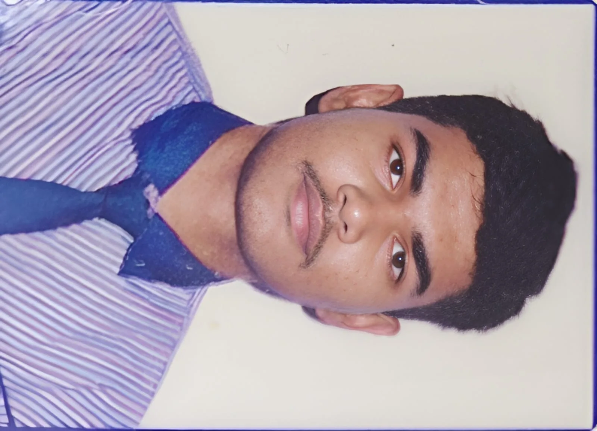

BHASKAR
I build things to understand things.

This is the working surface of my mind — what I question, what I am learning, what I am experimenting with, and the things I make in order to understand other things. It is quiet on purpose: words and work, in black and silver.
Currently
- Building
- quiet systems — OFF and mythOS, slowly
- Learning
- Japanese, from zero
- Thinking about
- what a quieter internet would look like
- Reading
- slowly, with a pen
Index
Selected builds
All buildsThe best ideas feel small at first, and then they grow quietly. Continue into the notebook
B